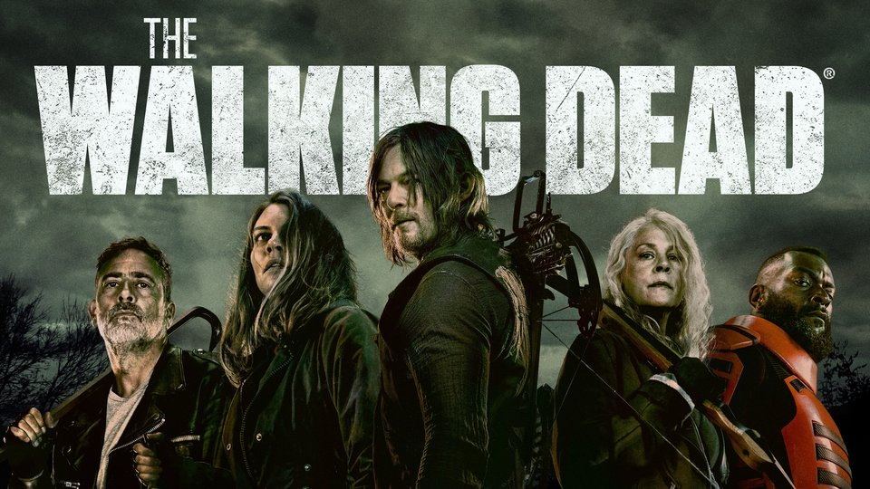

Melek Doğan
Hakkımda
Araştırmayı severim. Kendi işlerimde faydalı olacak her şeyi öğrenmeyi çok severim. Örneğin; dikiş yapmak (elbise vs.), cihazların tamirleri vb. Yabancı insanlarla tanışmayı, onların ülkeleri ve kültürleri hakkında bilgi edinmeyi ya da dillerini öğrenmeyi çok severim. Gün içinde genelde evdeki işlerimden kalan vakitlerimde kendimi istediğim alanlarda geliştirmeye çalışırım. Öğrendikçe sürüklenir ve bundan büyük bir zevk duyarım.
İlgi Alanlarım
- Film
- Başlangıç
- Yarının Sınırında
- Avatar
- Film
- Başlangıç
- Yarının Sınırında
- Avatar
- Film
- Başlangıç
- Yarının Sınırında
- Avatar
Sevdiğim Diziler
The Walking Dead

The Walking Dead (Türkçe: Yürüyen Ölüler), Frank Darabont tarafından geliştirilen bir Amerikan televizyon dizisidir. Hikâyesi, Robert Kirkman, Tony Moore ve Charlie Adlard 'ın aynı adlı çizgi romanına dayanmaktadır. Dizinin başrolünde, geçirdiği bir kaza sonrası girdiği komadan beklenmedik biçimde uyanan ve artık tüm dünyaya George A. Romero'nun korku filmlerindeki zombileri andıran etobur "aylaklar"ın egemen olduğunu keşfeden şerif yardımcısı[2] Rick Grimes rolüyle Andrew Lincoln yer almaktadır.